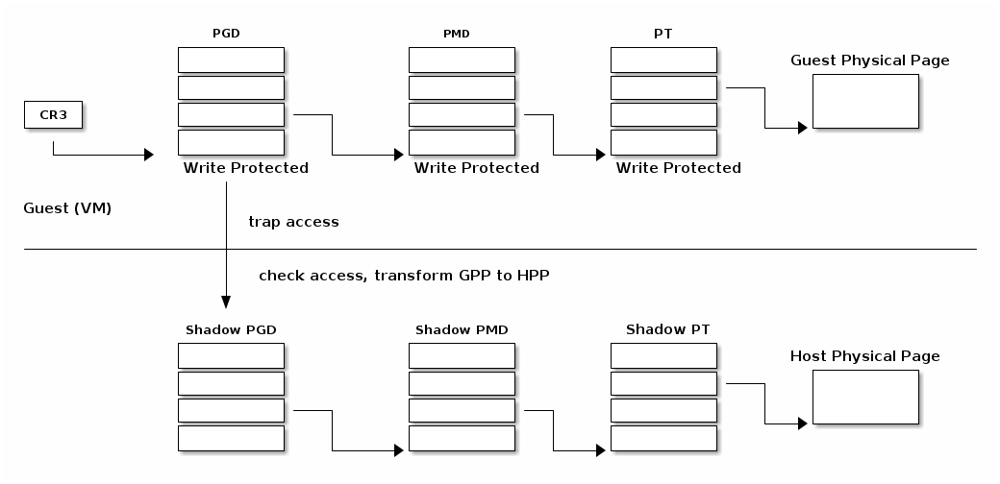
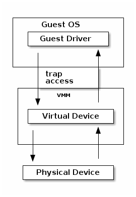
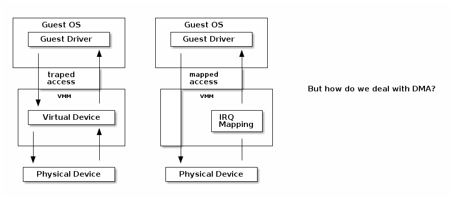
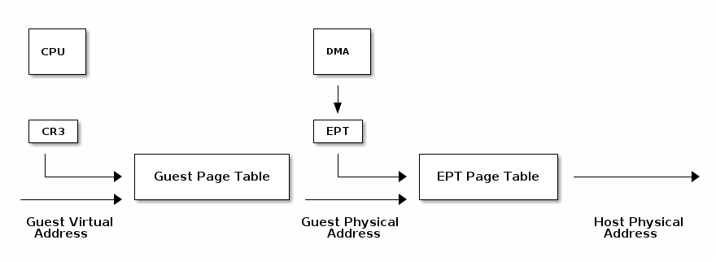
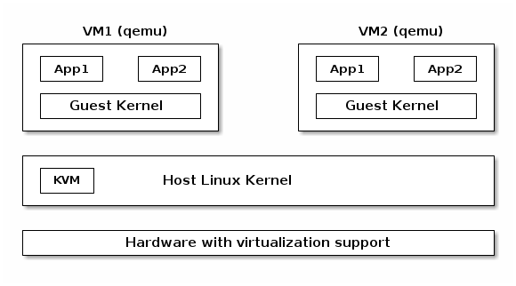

SO2 课程 12——虚拟化¶
keywords: 虚拟化, 模拟, 经典虚拟化, 软件虚拟化, MMU 虚拟化, 影子页表, 延迟影子同步, I/O 仿真, 部分虚拟化, Intel VT-x
课程目标：¶
- 模拟基础知识
- 虚拟化基础知识
- 半虚拟化基础知识
- 对虚拟化的硬件支持
- Xen 虚拟机监视器（hypervisor）概述
- KVM 虚拟机监视器概述
模拟（emulation）基础知识¶
- 指令被模拟（每次执行时都会模拟）
- 其他系统组件也被模拟:
- MMU
- 物理内存访问
- 外围设备
- 目标架构——被模拟的架构
- 主机架构——模拟器运行所基于的架构
- 如果是模拟，目标架构和主机架构可以不同
虚拟化（virtualization）基础知识¶
- 由 Popek 和 Goldberg 在 1974 年的一篇论文中定义
- 保真度
- 性能
- 安全性
经典虚拟化¶
- 捕获（trap）和模拟
- 主机和目标使用相同的架构
- 大多数目标指令可以直接执行
- 目标操作系统在主机上以非特权模式运行
- 特权指令被捕获和模拟执行
- 有两种机器状态：主机和客户机
软件虚拟化¶
- 并非所有架构都可以被虚拟化；例如 x86 架构：
- CS 寄存器编码当前特权级（CPL）
- 一些指令不会引发捕获（例如 popf 指令）
- 解决方案：使用二进制翻译来模拟指令
MMU 虚拟化¶
- “虚假”的虚拟机物理地址由主机转换为实际的物理地址
- 客户机虚拟地址 -> 客户机物理地址 -> 主机物理地址
- 主机硬件不直接使用客户机页表
- 虚拟机页表经过验证后，在主机上被翻译成一组新的页表（影子页表）
影子页表¶

延迟影子同步¶
- 客户机页表的更改通常通过批处理进行
- 为了避免重复的捕获、检查和转换，将具有写访问权限的客户机页表条目进行映射
- 在以下情况下更新影子页表：
- 刷新 TLB
- 在主机页面故障（page fault）处理程序中
I/O 仿真（emulation）¶

/*
* QEMU model of the UART on the SiFive E300 and U500 series SOCs.
*
* Copyright (c) 2016 Stefan O'Rear
*
* This program is free software; you can redistribute it and/or modify it
* under the terms and conditions of the GNU General Public License,
* version 2 or later, as published by the Free Software Foundation.
*
* This program is distributed in the hope it will be useful, but WITHOUT
* ANY WARRANTY; without even the implied warranty of MERCHANTABILITY or
* FITNESS FOR A PARTICULAR PURPOSE. See the GNU General Public License for
* more details.
*
* You should have received a copy of the GNU General Public License along with
* this program. If not, see <http://www.gnu.org/licenses/>.
*/
#include "qemu/osdep.h"
#include "qapi/error.h"
#include "qemu/log.h"
#include "chardev/char.h"
#include "chardev/char-fe.h"
#include "hw/irq.h"
#include "hw/char/sifive_uart.h"
/*
* Not yet implemented:
*
* Transmit FIFO using "qemu/fifo8.h"
*/
/* Returns the state of the IP (interrupt pending) register */
static uint64_t uart_ip(SiFiveUARTState *s)
{
uint64_t ret = 0;
uint64_t txcnt = SIFIVE_UART_GET_TXCNT(s->txctrl);
uint64_t rxcnt = SIFIVE_UART_GET_RXCNT(s->rxctrl);
if (txcnt != 0) {
ret |= SIFIVE_UART_IP_TXWM;
}
if (s->rx_fifo_len > rxcnt) {
ret |= SIFIVE_UART_IP_RXWM;
}
return ret;
}
static void update_irq(SiFiveUARTState *s)
{
int cond = 0;
if ((s->ie & SIFIVE_UART_IE_TXWM) ||
((s->ie & SIFIVE_UART_IE_RXWM) && s->rx_fifo_len)) {
cond = 1;
}
if (cond) {
qemu_irq_raise(s->irq);
} else {
qemu_irq_lower(s->irq);
}
}
static uint64_t
uart_read(void *opaque, hwaddr addr, unsigned int size)
{
SiFiveUARTState *s = opaque;
unsigned char r;
switch (addr) {
case SIFIVE_UART_RXFIFO:
if (s->rx_fifo_len) {
r = s->rx_fifo[0];
memmove(s->rx_fifo, s->rx_fifo + 1, s->rx_fifo_len - 1);
s->rx_fifo_len--;
qemu_chr_fe_accept_input(&s->chr);
update_irq(s);
return r;
}
return 0x80000000;
case SIFIVE_UART_TXFIFO:
return 0; /* Should check tx fifo */
case SIFIVE_UART_IE:
return s->ie;
case SIFIVE_UART_IP:
return uart_ip(s);
case SIFIVE_UART_TXCTRL:
return s->txctrl;
case SIFIVE_UART_RXCTRL:
return s->rxctrl;
case SIFIVE_UART_DIV:
return s->div;
}
qemu_log_mask(LOG_GUEST_ERROR, "%s: bad read: addr=0x%x\n",
__func__, (int)addr);
return 0;
}
static void
uart_write(void *opaque, hwaddr addr,
uint64_t val64, unsigned int size)
{
SiFiveUARTState *s = opaque;
uint32_t value = val64;
unsigned char ch = value;
switch (addr) {
case SIFIVE_UART_TXFIFO:
qemu_chr_fe_write(&s->chr, &ch, 1);
update_irq(s);
return;
case SIFIVE_UART_IE:
s->ie = val64;
update_irq(s);
return;
case SIFIVE_UART_TXCTRL:
s->txctrl = val64;
return;
case SIFIVE_UART_RXCTRL:
s->rxctrl = val64;
return;
case SIFIVE_UART_DIV:
s->div = val64;
return;
}
qemu_log_mask(LOG_GUEST_ERROR, "%s: bad write: addr=0x%x v=0x%x\n",
__func__, (int)addr, (int)value);
}
static const MemoryRegionOps uart_ops = {
.read = uart_read,
.write = uart_write,
.endianness = DEVICE_NATIVE_ENDIAN,
.valid = {
.min_access_size = 4,
.max_access_size = 4
}
};
static void uart_rx(void *opaque, const uint8_t *buf, int size)
{
SiFiveUARTState *s = opaque;
/* Got a byte. */
if (s->rx_fifo_len >= sizeof(s->rx_fifo)) {
printf("WARNING: UART dropped char.\n");
return;
}
s->rx_fifo[s->rx_fifo_len++] = *buf;
update_irq(s);
}
static int uart_can_rx(void *opaque)
{
SiFiveUARTState *s = opaque;
return s->rx_fifo_len < sizeof(s->rx_fifo);
}
static void uart_event(void *opaque, QEMUChrEvent event)
{
}
static int uart_be_change(void *opaque)
{
SiFiveUARTState *s = opaque;
qemu_chr_fe_set_handlers(&s->chr, uart_can_rx, uart_rx, uart_event,
uart_be_change, s, NULL, true);
return 0;
}
/*
* Create UART device.
*/
SiFiveUARTState *sifive_uart_create(MemoryRegion *address_space, hwaddr base,
Chardev *chr, qemu_irq irq)
{
SiFiveUARTState *s = g_malloc0(sizeof(SiFiveUARTState));
s->irq = irq;
qemu_chr_fe_init(&s->chr, chr, &error_abort);
qemu_chr_fe_set_handlers(&s->chr, uart_can_rx, uart_rx, uart_event,
uart_be_change, s, NULL, true);
memory_region_init_io(&s->mmio, NULL, &uart_ops, s,
TYPE_SIFIVE_UART, SIFIVE_UART_MAX);
memory_region_add_subregion(address_space, base, &s->mmio);
return s;
}
部分虚拟化¶
- 修改客户机操作系统以与虚拟机监视器（VMM）合作
- CPU 部分虚拟化
- MMU 部分虚拟化
- I/O 部分虚拟化
- VMM 提供超级调用（hypercalls）用于：
- 激活/停用中断
- 更改页表
- 访问虚拟化外设
- VMM 使用事件触发虚拟机中的中断
Intel VT-x¶
- 硬件扩展，将 x86 架构转换为可以进行经典虚拟化的状态
- 新的执行模式：非根模式（non-root mode）
- 每个非根模式实例使用虚拟机控制结构（VMCS）来存储其状态
- VMM 在根模式（root mode）下运行
- 通过 VM-entry 和 VM-exit 在两种模式之间进行切换
虚拟机控制结构¶
- 客户机信息：虚拟 CPU 的状态
- 主机信息：物理 CPU 的状态
- 保存的信息：
- 可见状态：段寄存器、CR3、IDTR 等
- 内部状态
- 不能直接访问 VMCS，但可以使用特殊指令访问某些信息
虚拟机进入和退出¶
- 虚拟机进入——使用新指令将 CPU 切换到非根模式，并从 VMCS 加载虚拟机状态；主机状态保存在 VMCS 中
- 允许在客户机中注入中断和异常
- 根据 VMCS 的配置，虚拟机退出将自动触发
- 当虚拟机退出时，主机状态从 VMCS 加载，客户机状态保存在 VMCS 中
虚拟机执行控制字段¶
- 选择触发虚拟机退出的条件；示例：
- 如果生成外部中断
- 如果生成外部中断并且 EFLAGS.IF 被设置
- 如果修改了 CR0-CR4 寄存器
- 异常位图——选择生成虚拟机退出的异常
- IO 位图——选择生成虚拟机退出的 I/O 地址（IN/OUT 访问）
- MSR 位图——选择生成虚拟机退出的 RDMSR 或 WRMSR 指令
扩展页表¶
- 减少 MMU 虚拟化的复杂性，提高性能
- 不再需要通过虚拟机退出来访问 CR3、INVLPG 和页面故障
- EPT 页表由 VMM 控制
VPID¶
- 虚拟机进入和退出会强制 TLB 刷新——丢失 VMM / VM 的转换信息
- 为了避免这个问题，每个虚拟机（VPID 0 保留给 VMM）关联一个 VPID（虚拟处理器 ID）标签
- 所有 TLB 条目都被标记
- 在虚拟机进入和退出时，只刷新与标签相关的条目
- 在搜索 TLB 时，只使用当前的 VPID
I/O 虚拟化¶

- 以受控的方式从虚拟机直接访问硬件
- 将主机的 MMIO 直接映射到客户机
- 转发中断
相比于模拟设备时的陷阱 MMIO，我们可以通过映射到客户机的页表，允许客户机直接访问 MMIO。
设备产生的中断由主机内核处理，并向 VMM 发送信号，VMM 将中断注入到客户机中，就像对于模拟设备一样。
VT-d 使用 I/O MMU（DMA 重映射）来保护和转换虚拟机物理地址。
- 消息传递中断（MSI）= DMA 写入 IRQ 控制器的主机地址范围（例如 0xFEExxxxx）
- 地址的低位和数据指示要发送到哪个 CPU 的哪个中断向量
- 中断重映射表指向应该接收中断的虚拟 CPU（VMCS）
- I/O MMU 将捕获 IRQ 控制器的写入并在中断重映射表中查找
- 如果该虚拟 CPU 当前正在运行，则直接接收中断
- 否则，在一个表中设置一个位（发布的中断描述符表），下次运行该 vCPU 时将注入中断
- 单根——输入输出虚拟化
- 具有多个以太网端口的物理设备将显示为 PCI 总线上的多个设备
- 物理功能用于控制且能配置
- 呈现自身为新的 PCI 设备
- 使用哪个 VLAN
- 新的虚拟功能在总线上枚举，并可以分配给特定的客户机
qemu¶
- 通过 Tiny Code Generator（TCG）使用二进制翻译进行高效的模拟
- 支持不同的目标和主机体系结构（例如，在 x86 上运行 ARM 虚拟机）
- 进程级和完全系统级的仿真
- MMU 仿真
- I/O 仿真
- 可与 KVM 一起用于加速虚拟化
KVM¶
- 用于硬件虚拟化的 Linux 设备驱动程序（例如 Intel VT-x、SVM）
- 基于 IOCTL 的接口，用于管理和运行虚拟 CPU
- VMM 组件在 Linux 内核中实现（例如中断控制器、定时器）
- 如果存在，使用影子页表或 EPT
- 使用 qemu 或 virtio 进行 I/O 虚拟化
类型 1 和类型 2 的 Hypervisor¶
- 类型1 = 裸机 Hypervisor
- 类型2 = 嵌入在现有内核/操作系统中的 Hypervisor